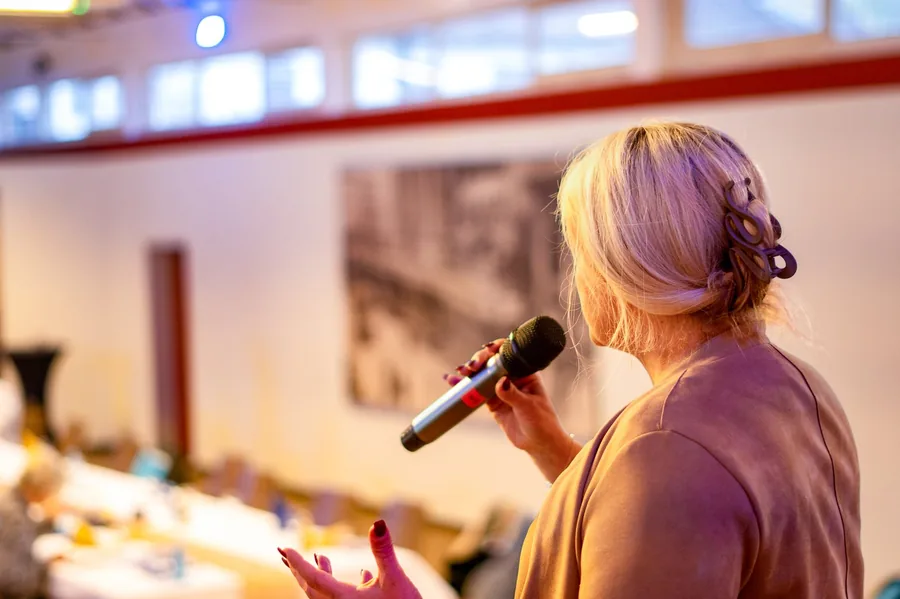
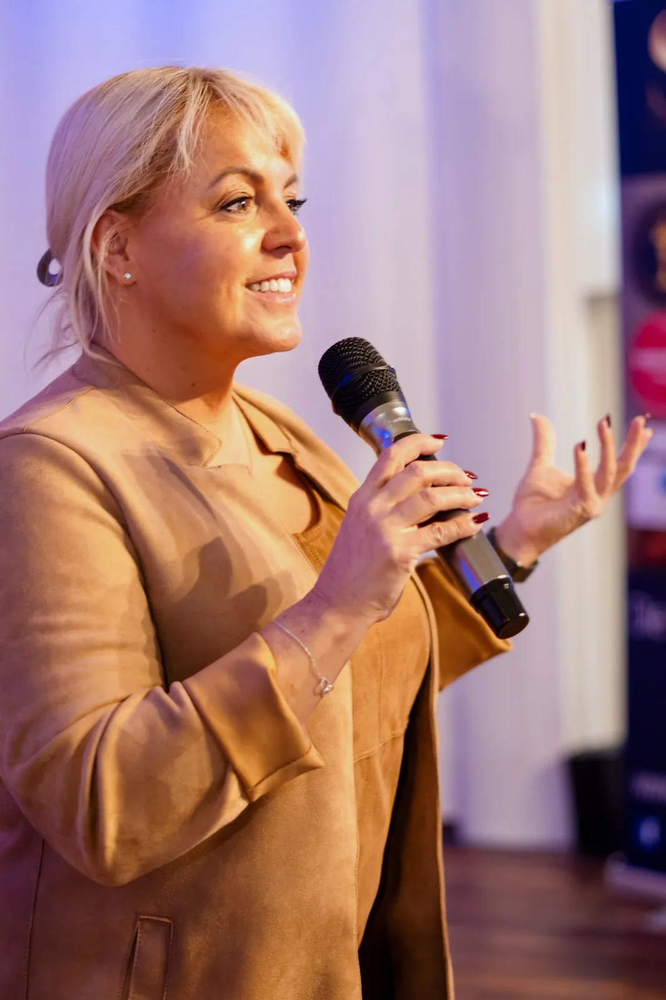
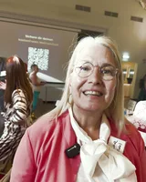

Signatur-Keynote
Du wirkst immer – menschliche Wirkungskraft im KI-Zeitalter
Du wirkst immer. Die Frage ist nur: wie?
Alle Angaben zur Signatur-KeynoteAktuell: 7-Tage-Wirkungskraft-Challenge · Start 26. OktoberChallenge · Start 26.10. · Platz sichernTermin bestätigen
Für Geschäftsführung, Führungskräfte, HR, Vertrieb und Veranstalter.
HauptwegeFür Coaches, Trainer, Speaker, Berater, Autoren und Selbstständige.
HauptwegeClaudia gibt Unternehmensmomenten eine Stimme, eine Richtung und eine Wirkung.
Claudia buchenWorkshop, 90-Tage-Programm oder Sparring: vor Ort oder online.
FormateWer hier spricht und warum Wirkung ihr Lebensthema ist.
Hauptwege
Seit 37 Jahren als Coach und Trainerin unterwegs, heute auch als Keynote Speakerin.
Claudia kennenlernenMenschliche Wirkungskraft im KI-Zeitalter
Keynotes für Unternehmen, die KI voranbringen wollen, ohne den Menschen zu verlieren. Ein Vortrag, der nach dem Applaus noch etwas verändert.

KI ist eingeführt, die Folien sind perfekt, die Botschaft ist richtig.
Trotzdem ändert sich nach der Veranstaltung wenig. Menschen folgen nicht Folien. Sie folgen Menschen, denen sie glauben.
Für Unternehmer, Führungskräfte und Experten – und für Veranstalter, die ihrem Publikum mehr mitgeben wollen als einen Abend.
Ein klarer Perspektivwechsel und ein konkreter Transferimpuls, nicht nur Inspiration.
Eine gemeinsame Sprache für menschliche Wirkung im KI-Zeitalter – und der Anfang von Vertrauen, Akzeptanz und Handlungsbereitschaft.
Beobachtete Wirkung nach einer deiner Keynotes (z. B. Rückmeldung eines Auftraggebers, was danach anders lief): bitte von dir.

Bühnenausschnitt folgt. Das Transkript kommt mit der Aufnahme.
Audio von dir: Bühnenausschnitt, 45–90 Sekunden. Echter Bühnenton, ein prägnanter Gedanke, hörbare Reaktion des Publikums. Bühnenausschnitt folgt.

Du wirkst immer. Die Frage ist nur: wie?
Alle Angaben zur Signatur-KeynoteDazu fünf Themen für Unternehmen: Weitere Vortragsthemen ansehen
Du wirkst immer. Die Frage ist nur: wie?
Wie Unternehmer, Führungskräfte und Experten trotz perfekter KI-Inhalte als Mensch erkennbar bleiben, Vertrauen schaffen und Menschen bewegen.
KI kann Inhalte erzeugen. Wirkung entsteht durch den Menschen. Deine Kunden und Mitarbeitenden haben heute dieselben Werkzeuge wie du. Der Unterschied ist der Mensch, der vorne steht – und ob man ihm abnimmt, was er sagt.
Auswahl aus deinen Leitsätzen: Vorschlag Bitte bestätigen, ob das die Kerngedanken der Keynote sind.
Ein klarer Perspektivwechsel und ein konkreter Transferimpuls: Aufmerksamkeit, Orientierung und eine gemeinsame Sprache für menschliche Wirkung im KI-Zeitalter.
Was soll das Publikum danach konkret anders tun oder sagen? Bitte von dir.
Geschäftsführung, Führungskräfte, Teams in Veränderung, Vertrieb – und Veranstalter, die ihrem Publikum mehr mitgeben wollen als einen Abend. Für Kick-off und Jahresauftakt, Führungskräftetagung, Konferenz und Kongress, Kundenveranstaltung, KI-Einführung.
Bitte von dir. Heute stehen auf claudiaconen.com zwei verschiedene Angaben: „vierzig bis sechzig Minuten“ (Keynote & Moderation) und „sechzig bis neunzig Minuten“ (Unternehmen).
Das Transfer-Lab am selben Tag: Keynote am Vormittag für alle, Arbeit am Nachmittag mit denen, die danach sprechen müssen. Transfer-Lab ansehen
Jedes Thema ist ein Zugang zur selben Frage: Wie bleibt Wirkung menschlich, wenn KI Inhalte erzeugt?Vorschlag
Vorschlag Ausgangsfrage und Ergebnis
Sollen die vier Zahlen der Pronova-BKK-Studie „Arbeiten 2025“ von deiner heutigen Seite hierher (mit Quelle)? Bitte von dir.
Dauer je Thema: bitte von dir (gilt für alle fünf, siehe Signatur-Keynote).
Nicht jeder Anlass braucht dieselbe Rede. Was sich unterscheidet, ist nicht das Thema – sondern was danach passieren soll.
Der Ton für das ganze Jahr wird an diesem Tag gesetzt. Danach ist er schwer zu korrigieren.
Führungskräfte müssen die Veränderung tragen, die sie selbst nicht beschlossen haben. Hier geht es darum, wie sie das sagen, ohne auswendig gelernt zu klingen.
Eine Einführung scheitert selten an der Software und fast immer daran, dass niemand die Angst benannt hat, die im Raum steht.
Wenn etwas Unbequemes zu sagen ist: Umbau, Standortfrage, neue Richtung. Die Versammlung entscheidet, ob man dir danach noch glaubt.
Der Unterschied ist der Mensch, der vorne steht – und ob man ihm abnimmt, was er sagt.
Ein Saal entscheidet, ob er sich deinen Namen merkt.
Passt nicht, wenn du reine Unterhaltung für den Abend suchst, ein Software- oder Prompt-Training brauchst oder die Keynote ohne Vorgespräch gebucht werden soll.Vorschlag
Das Thema bleibt, der Aufbau auch – die Beispiele kommen aus dem Vorgespräch.
Keine Standardrede mit deinem Logo darauf. Und wenn der Impuls im Alltag ankommen soll: das Transfer-Lab. Keynote am Vormittag für alle, Arbeit am Nachmittag mit denen, die danach sprechen müssen.
Dauer und Gruppengröße des Transfer-Labs: bitte von dir. Laut deinem Markenhandbuch dauert es „2–3 Stunden“ – für die Website bestätigen oder ändern.
„… aber sie kann auch hinhören, sie kann zuhören …“
Ein Teammember ist Claudia Conen von unserer Create4We Community, wo sie regelmäßig ihre wertvollen Inhalte mit unseren Kunden, mit unseren Menschen teilt.
Was ich an Claudia so schätze, ist zum Teil ihre sehr direkte Art, aber sie kann auch hinhören, sie kann zuhören, sie ist einfach da, sie beobachtet und zum richtigen Moment greift sie dann ein, im positiven Sinne natürlich, und hat auch heute wieder die Bühne gerockt mit ihrer Keynote zum Thema KI.
Diese Verwandlungen auch, was sie auf eine ehrliche Art und Weise zeigt, aber auch ihre Menschlichkeit, wo dann eben die KI auch mal fehl am Platz sein darf. Und genau das liebe ich an Claudia. Danke, Claudia.
„Du hast sie ins Bewusstsein gesprochen, dass man die Angst davor sich nehmen darf.“Quelle: Videostimme, wörtliche Abschrift, gekürzt

„… dass ich zum ersten Mal begriffen habe, wie wichtig das für unser Business wirklich ist.“Quelle: Videostimme, wörtliche Abschrift, gekürzt
„Ihre Präsenz auf der Bühne und ihre Stimme ist außergewöhnlich.“Quelle: geschriebene Kundenstimme auf claudiaconen.com
Nutzungsfreigabe der Videostimmen von Sabina Kocherhans, Verena Voigtländer und Niklas Mertens dokumentieren (§19). Mindestens eine Stimme eines Unternehmens oder Veranstalters mit Funktion und Logo-Freigabe: bitte von dir.
Auf der Bühne spricht sie über Führung, Kommunikation und Veränderung – und darüber, warum Wirkung durch den Menschen entsteht, nicht durch das Werkzeug.
Seit 37 Jahren ist sie als Coach und Trainerin unterwegs. Sie ist ausgebildete KI-Managerin (IHK) und spricht nicht über etwas, das sie selbst nicht benutzt. Denn KI kann berechnen, doch Persönlichkeit begeistert, fasziniert und berührt.
Antwortzeit auf Anfragen und Länge des Vorgesprächs: bitte von dir.
Reisen: deutschlandweit und im deutschsprachigen Ausland. Anreise und Übernachtung kommen dazu und stehen im Angebot.
Claudia Conen – Die Umsatzstimme
Keynote Speakerin und Expertin für menschliche Wirkungskraft im KI-Zeitalter.
Speakerprofil als PDF, Pressefotos, Anmoderationstext und Honorarrahmen: bitte von dir.
Weiterleitungsdomain claudiaconen-keynote.de: Entscheidung und Kauf bei Claudia (Masterhandbuch §16; Ziel wäre eine dauerhafte Weiterleitung auf diese Seite, keine zweite Website).
Nein. Das Thema bleibt, der Aufbau auch – die Beispiele kommen aus dem Vorgespräch. Ein Saal voller Vertriebsleute braucht andere Szenen als eine Verbandstagung, und das merkt man im Raum sofort.
Ja, und es spart dir eine Person. Sinnvoll ist es, wenn die Keynote früh liegt – danach ist Claudia für den Rest des Tages die Moderatorin, und das trägt besser als umgekehrt.
Ja, und es ist etwas anderes als vor Ort – nicht schlechter, aber anders. Eine Kamera verzeiht weniger als ein Saal.
Kurzfristiger, als die meisten denken. Frag einfach mit deinem Wunschtermin an. Wenn es nicht geht, sagt Claudia es sofort, statt dich hinzuhalten.
Das Honorar hängt von Dauer, Ort und Vorbereitung ab. Du bekommst es im Vorgespräch und vor der Zusage schriftlich.
Datum, Anlass, Zahl der Gäste – mehr braucht es nicht für eine erste Antwort. Wenn Claudia nicht die Richtige ist, sagt sie es dir.
Keynote anfragen